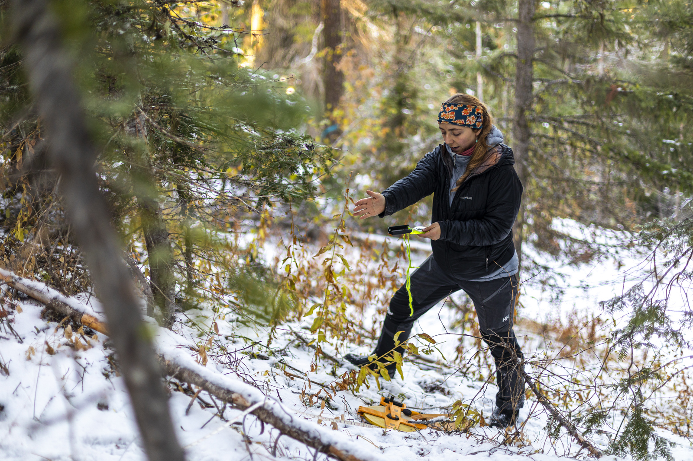

A Ph.D. in Civil and Environmental Engineering with an emphasis on mountain hydrology prepares students for a career as a professor or researcher at a university, as a researcher or consultant with a private or government agency (county, state, or national), or as a data scientist in industry. Most jobs are located in regions that depend on the mountain snowpack for their water supply. Aside from rare exceptions, we encourage people interested in an M.S. but not Ph.D. to enroll in the coursework-only masters program and take the snow hydrology class. (Please see the FAQs page about the coursework vs. thesis programs.)
The University of Washington is an ideal place to study snow and mountain hydrology because it has strong programs in all of the relevant disciplines. In addition to our department of Civil and Environmental Engineering, students take classes in Atmospheric Sciences, Earth and Space Sciences, Applied Mathematics, and The School of Environmental and Forest Sciences. Students can benefit from the eScience Institute to learn advanced data science, and can earn a data science option on their degree. Many students in our group also participate in the UW Program on Climate Change and in the Future Rivers Program.
We typically accept one to two new graduate students each year into our research group. Admission is competitive and dependent on funding. We encourage all students to apply for whatever fellowships they are eligible for. We expect students to have high grades in an undergraduate program that emphasizes quantitative skills. Prior research experience and computer programming skills are preferred. Some projects also require outdoor skills sufficient to conduct field research in remote areas at high elevations. Current and former students have come from a wide variety of backgrounds, majors, and geographic areas. Some have taken advantage of community college math classes and summer programming workshops to obtain relevant skills before starting graduate classes. We value diversity and encourage students to reach out if they have questions about their specific fit.
If you are interested in applying, please first read the answers to our FAQs. If the program sounds like a good fit, please contact Professor Jessica Lundquist with a short e-mail that specifies your specific interests, your prior experience, and your GPA to ask about current opportunities. Please be aware that generally, the funding situation for new students is not known prior to the deadline for applying, so Professor Lundquist will only be able to tell you whether your interests sound like a good fit for our group or for another group on campus. Given this situation, please make your e-mail as specific as possible so that your individual goals and interests are clear. Very general e-mails sent to multiple professors (for example, saying that you are interested in “water and civil engineering” and/or stating that you read a paper with great interest but then demonstrate no actual knowledge of what is written in that paper), are not helpful and will likely be deleted without reply.